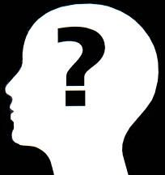

La historia de la filosofía occidental es la historia de la tradición filosófica en Occidente, en contraste con la historia de la filosofía oriental, que se desarrolló de manera relativamente independiente. Se remonta más de 2500 años a la Antigua Grecia y se la puede dividir en cinco grandes períodos: filosofía antigua, filosofía medieval, filosofía renacentista, filosofía moderna y filosofía contemporánea, que se corresponden con la periodización convencional de la historia universal en Edad Antigua, Edad Media, Renacimiento, Edad Moderna y Edad Contemporánea.
La filosofía antigua es el período de la historia de la filosofía occidental que corresponde a la Edad Antigua. Comprende la filosofía griega (presocrática y helenística) y la filosofía romana. Duró más de 1100 años, alrededor desde el año 600 a. C. (con Tales de Mileto) hasta el siglo VI d.C., cuando los últimos neoplatónicos estaban activos. Sus principales ubicaciones fueron la antigua Grecia y el Imperio Romano.
La filosofía de la antigüedad fue limitada geográficamente en el Mediterráneo. Los filósofos de la antigüedad pueden dividirse a grandes rasgos en diferentes grupos. Primero, los filósofos anteriores a Sócrates, llamados «presocráticos» (alrededor del 600 - 400 a.C.) y conocidos por dar «el paso del mito al logos». Luego, el período clásico griego, que comienza con Sócrates (alrededor del 500 - 300 a. C.). Platón, alumno de Sócrates, y Aristóteles, alumno de Platón, se convirtieron en dos de los filósofos más importantes e influyentes, conocidos como los «socráticos mayores». Otros contemporáneos fueron los sofistas y los «socráticos menores» (megáricos, cínicos y cirenaicos). Finalmente, la filosofía del período helenístico siguió al período clásico, seguida por la filosofía de la antigüedad tardía, que incluyen a los epicúreos, los estoicos, los escépticos y los neoplatónicos.
Otras tradiciones filosóficas importantes de la antigüedad fueron la filosofía china y la filosofía india, influyentes fueron las culturas del judaísmo, el antiguo Egipto, el Imperio Persa y Mesopotamia. En las regiones del Creciente Fértil, Irán y Arabia surgió la literatura filosófica de los libros sapienciales y que hoy domina la cultura islámica. La literatura sapiencial temprana del Creciente Fértil era un género que buscaba instruir a las personas sobre la acción ética, la vida práctica y la virtud a través de historias y proverbios. En el Antiguo Egipto, estos textos eran conocidos como sebayt («enseñanzas») y son fundamentales para nuestra comprensión de la filosofía del Antiguo Egipto. La astronomía babilónica también incluyó muchas especulaciones filosóficas sobre la cosmología que pudieron haber influido en los antiguos griegos.